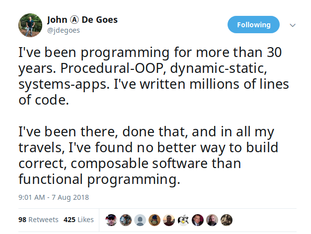
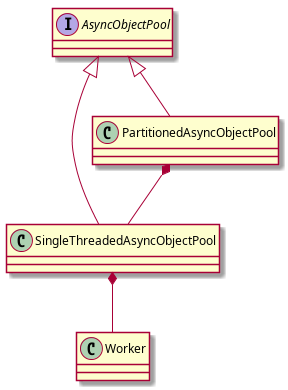

with
Cats-Effect and Fs2
@ 水滴技术团队
My first resume, circa 2004, please try not to laugh too hard. Apparently I had "good OOP programming skills", "proven leadership skills" and knew DHTML and Corel Draw, OMFG

val f1 = Future { Thread.sleep(1000) 1 } val f2 = Future { Thread.sleep(1000) 2 } for { r1 <- f1 r2 <- f2 } yield (r1, r2)
def ioParallel = { //Through cats.Parallel val f1 = IO.sleep(1.seconds).as(1) val f2 = IO.sleep(1.seconds).as(1) (f1, f2).parTupled }
def ioCancelable = { def setInterval[A](i: FiniteDuration, f: IO[A]): IO[Unit] = { def loop() = { IO.sleep(i) >> f.runAsync(_ => IO.unit) >> loop() } loop().start.flatMap(_.cancel) } for { h <- setInterval(i, IO(println("Hi"))).start _ <- IO.sleep(1.seconds) _ <- h } yield {} }
Purely functional, lock-free, non-blocking

final case class State[F[_], A]( queue: Vector[A], deq: Vector[Deferred[F, A]] ) class Queue[F[_], A](ref: Ref[F, State[F, A]]) (implicit F: ConcurrentEffect[F], T: Timer[F]) { def enqueue(a: A): F[Unit] def timedDequeue(timeout: FiniteDuration): F[Option[A]] }
// final case class State[F[_], A](queue: Vector[A], deq: Vector[Deferred[F, A]]) // ref: Ref[F, State[F, A]] def enqueue(a: A): F[Unit] = { ref.modify { s => if (s.deq.isEmpty) { (s.copy(queue = s.queue :+ a), None) } else { (s.copy(deq = s.deq.tail), Some(s.deq.head)) } }.flatMap { case Some(h) => F.runAsync(h.complete(a))(_ => IO.unit).to[F] case None => F.unit } }
implicit class AhcSyntax[F[_]](req: BoundedRequestBuilder)(implicit F: Concurrent[F]) { def run() = F.cancelable[Response] { k => val future = req.execute(new AsyncCompletionHandler[Unit] { override onThrowable(Throwable t) = { k(Left(t)) } override onCompleted(res: Response) = { k(Right(res)) } }) F.delay(future.cancel()) } }
def shift[F[_], A](f: => A)(ec: ExecutionContext)(implicit S: ContextShift[F]) = { S.evalOn(ec)(F.delay(f)) }
trait UserAlg[F[_]] { def add(a: User): F[Long] def get(id: Long): F[Option[User]] }
sealed trait UserOpA[A] case class Add(u: User) extends UserOpA[Long] case class Get(id: Long) extends UserOpA[Option[User]] type UserOp[A] = Free[UserOpA, A] def add(u: User): UserOp[Long] = Free.liftF[UserOpA, Long](new Add(u)) def get(id: Long): UserOp[Option[User]] = Free.liftF[UserOpA, Option[User]](new Get(id)) def init(u: User) = { get(u.id).flatMap { case Some(u) => Free.pure(u) case None => add(u).map(id => u.copy(id = id)) } }
class AlgWithFApp[F[_]](alg: UserAlg[F])(implicit F: Monad[F]) { def init(user: User) = alg.get(user.id).flatMap { case None => alg.add(user).map(id => user.copy(id = id)) case Some(h) => F.pure(h) } }
sealed trait UserLoginErr extends Exception object UserLoginErr { case class NotExists(email: String) extends UserLoginErr case object PasswordIncorrect extends UserLoginErr } trait UserAlg[F[_]] { def login(email: String, pass: String): F[Either[UserLoginErr, Unit]] }
Streaming your data with Stream
type Pipe[F[_], I, O] = Stream[F, I] => Stream[F, O] type Sink[F[_], I] = Pipe[F, I, Unit] trait Topic { def publish: Sink[F, A] def subscribe: Stream[F, A] } trait Queue[F[_], A] { def enqueue: Sink[F, A] def dequeue: Stream[F, A] }
case class User(id: Long) def readFrom(minId: Long): F[Seq[User]] = ??? def sendMsg(u: User): F[Unit] = ??? def stream() = { def loop(from: Long): Stream[F, User] = Stream.eval(readFrom(from)).flatMap { case us if !us.isEmpty => Stream.emits(us) ++ loop(us.map(_.id).max) case us => Stream.empty } } loop(0L) } stream().evalMap(sendMsg)
stream().mapAsync(100)(sendMsg)
def stream[F[_]](cli: BinaryLogClient)(implicit F: ConcurrentEffect[F]) = { def register(queue: Queue[F, Event]) = F.delay { cli.registerEventListener(new BinaryLogClient.EventListener() { override def onEvent(event: Event) { F.toIO(queue.enqueue1(event)).unsafeRunSync() //Blocking } }) cli.connect(3000) //Spawns in new Thread } Stream.bracket { Queue.bounded[F, Event](1000).flatTap(register) } { _ => F.delay(cli.disconnect()) }.flatMap(q => q.dequeueAvailable) }
def merge[F[_]: ConcurrentEffect, A] { def fromQuery: Stream[F, A] = ??? def fromRealtime: Stream[F, A] = ??? def stream = fromQuery.merge(fromRealtime) }
def parJoin[F[_]: ConcurrentEffect, A] = { def conns: Stream[F, Con] def request(c: Con): Stream[F, Msg] def reply(m: Msg): F[Unit] def run() = conns.map(request).parJoin(1000).evalMap(reply) }